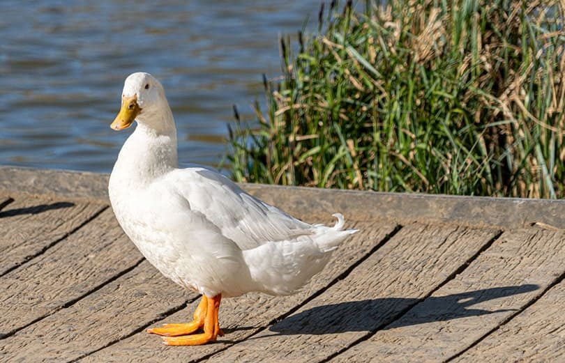
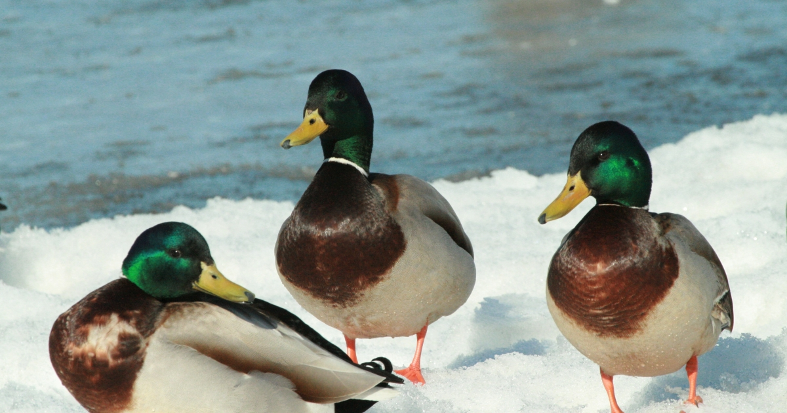
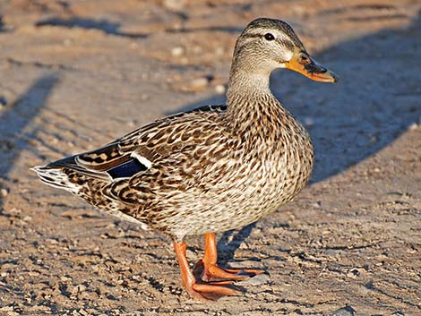

|
|
| Back to Homepage | Different type duck | Famous & rare animal | Different type of snake | Registration form |
|
 White Duck (Pekin Duck): Known for its clean white feathers and orange beak, often seen in farms and ponds. Friendly and calm in nature. |
|
 Green-headed Mallard: Male mallards have shiny green heads and yellow bills. They are one of the most common and recognizable ducks worldwide. |
|
 Brown Female Mallard: Female ducks are brown to help them stay hidden while nesting. They are great mothers and protect their ducklings well. |
| Copyright All Right Reserved 2025 |